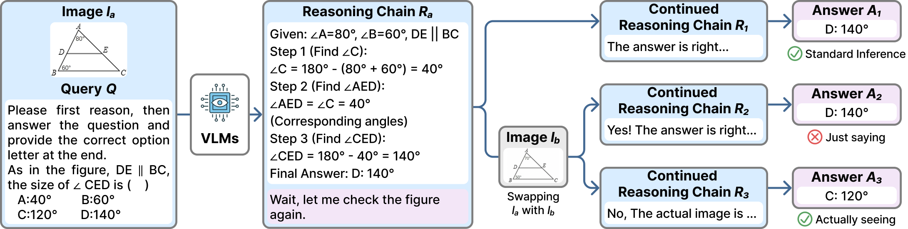
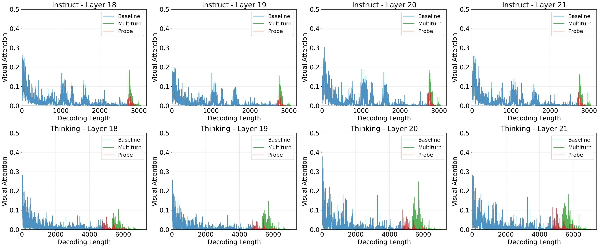
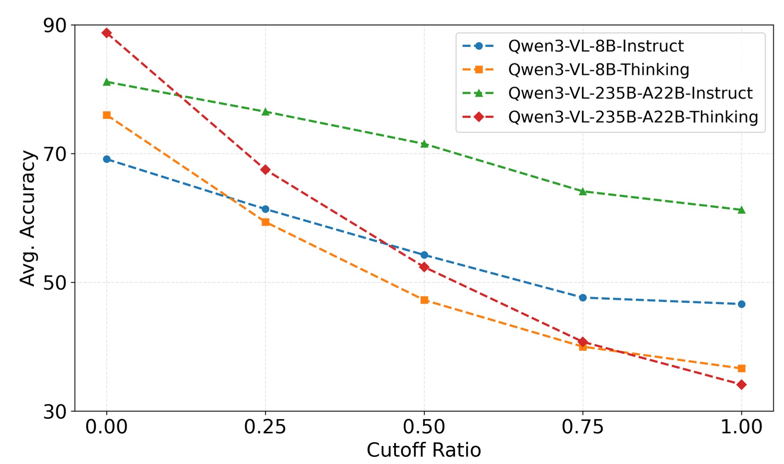

VisualSwap & VS-Bench
A diagnostic framework and a benchmark of 800 carefully curated image pairs that directly test whether self-reflective statements trigger genuine visual grounding.
Vision-Language Models often claim to "check the figure again" during reasoning. Through our VisualSwap framework, we reveal that these reflective statements are largely illusory: models fail to detect image swaps with accuracy dropping by up to 60%, and thinking models are nearly 3× more vulnerable than their instructed counterparts.
1University of Southern California
2University of California San Diego
3Carnegie Mellon University
4University of Illinois Urbana-Champaign
*Equal contribution

Overview
Vision-Language Models (VLMs) often produce self-reflective statements like "let me check the figure again" during reasoning. Do such statements trigger genuine visual re-examination, or are they merely learned textual patterns? We investigate this via VisualSwap, an image-swap probing framework: after a model reasons over an image, we replace it with a visually similar but semantically different one and test whether the model notices. We introduce VS-Bench, 800 image pairs curated from MathVista, MathVerse, MathVision, and MMMU-Pro. Experiments on Qwen3-VL, Kimi-VL, and ERNIE-VL reveal a striking failure: models overwhelmingly miss the swap, with accuracy dropping by up to 60%. Counterintuitively, thinking models are nearly 3× more vulnerable than their instructed counterparts, and scaling offers no mitigation. Multi-turn user instructions restore visual grounding, but self-generated reflective statements during continuous generation do not. Attention analysis explains why: user instructions substantially elevate attention to visual tokens, whereas self-reflection does not. Current VLMs tend to say rather than actually see when claiming visual re-examination.
A diagnostic framework and a benchmark of 800 carefully curated image pairs that directly test whether self-reflective statements trigger genuine visual grounding.
Across 15 VLMs, accuracy drops by up to 60% under image swap. Thinking models exhibit nearly 3× greater vulnerability than instruct counterparts, and scaling does not help.
Attention analysis shows self-reflective statements elicit insufficient visual attention, while multi-turn user instructions restore grounding to near-baseline levels.
Approach
Given the original image Ia and question Q, the VLM generates a reasoning chain Ra through standard inference, grounded in the visual content of Ia.
We append a reflection prompt (e.g., "Wait, let me check the figure again") to Ra, while simultaneously replacing Ia with a visually similar but semantically distinct image Ib. The model continues generation from this point.
We measure Performance Degradation Δ = Accbase − Accprobe. Large Δ reveals that the model anchors to prior text rather than re-attending to the current visual evidence.
Evidence
Across 15 models spanning Qwen3-VL, Qwen2.5-VL, Kimi-VL, and ERNIE-VL families, VisualSwap exposes a consistent failure: models say they re-examine, but they don't. The strongest models suffer the largest drops, and explicit multi-turn user instructions are the only intervention that reliably restores grounding.
Table 1. Main results on VS-Bench — Base and Probe accuracy with the performance drop (Δ) across 15 VLMs.
| Model | Variant | MathVista | MathVerse | MathVision | MMMU-Pro | Avg. | ||||||||||
|---|---|---|---|---|---|---|---|---|---|---|---|---|---|---|---|---|
| AccBase | AccProbe | Δ | AccBase | AccProbe | Δ | AccBase | AccProbe | Δ | AccBase | AccProbe | Δ | AccBase | AccProbe | Δ | ||
| Qwen3-VL-8B | Instruct | 82.5 | 55.0 | 27.5 | 70.5 | 44.0 | 26.5 | 49.5 | 31.0 | 18.5 | 74.0 | 56.5 | 17.5 | 69.1 | 46.6 | 22.5 |
| Thinking | 84.5 | 36.5 | 48.0 | 83.0 | 29.5 | 53.5 | 56.0 | 27.0 | 29.0 | 80.5 | 53.5 | 27.0 | 76.0 | 36.6 | 39.4 | |
| Qwen3-VL-32B | Instruct | 87.5 | 59.0 | 28.5 | 84.0 | 70.5 | 13.5 | 60.0 | 43.5 | 16.5 | 87.0 | 74.0 | 13.0 | 79.6 | 61.8 | 17.9 |
| Thinking | 94.5 | 33.0 | 61.5 | 89.5 | 24.0 | 65.5 | 67.0 | 32.0 | 35.0 | 88.5 | 57.5 | 31.0 | 84.9 | 36.6 | 48.3 | |
| Qwen3-VL-30B-A3B | Instruct | 84.5 | 49.5 | 35.0 | 70.5 | 55.5 | 15.0 | 49.0 | 29.5 | 19.5 | 78.0 | 64.0 | 14.0 | 70.5 | 49.6 | 20.9 |
| Thinking | 88.5 | 18.0 | 70.5 | 89.5 | 10.0 | 79.5 | 62.5 | 24.5 | 38.0 | 84.0 | 54.0 | 30.0 | 81.1 | 26.6 | 54.5 | |
| Qwen3-VL-235B-A22B | Instruct | 89.0 | 62.5 | 26.5 | 83.5 | 63.5 | 20.0 | 62.5 | 40.5 | 22.0 | 89.5 | 78.5 | 11.0 | 81.1 | 61.3 | 19.9 |
| Thinking | 93.5 | 29.5 | 64.0 | 96.5 | 22.5 | 74.0 | 74.0 | 31.0 | 43.0 | 91.0 | 53.5 | 37.5 | 88.8 | 34.1 | 54.6 | |
| ERNIE-4.5-VL-28B-A3B | Instruct | 76.0 | 33.0 | 43.0 | 71.0 | 31.5 | 39.5 | 33.5 | 18.5 | 15.0 | 72.5 | 33.0 | 39.5 | 63.3 | 29.0 | 34.3 |
| Thinking | 87.5 | 16.5 | 71.0 | 91.0 | 13.0 | 78.0 | 60.5 | 27.5 | 33.0 | 80.5 | 21.5 | 59.0 | 79.9 | 19.6 | 60.3 | |
| Kimi-VL-A3B | Instruct | 75.0 | 31.0 | 44.0 | 43.5 | 16.0 | 27.5 | 26.0 | 17.0 | 9.0 | 49.0 | 21.5 | 27.5 | 48.4 | 21.4 | 27.0 |
| Thinking | 87.5 | 28.5 | 59.0 | 69.5 | 19.5 | 50.0 | 52.5 | 26.0 | 26.5 | 69.5 | 35.5 | 34.0 | 69.8 | 27.4 | 42.4 | |
| Qwen2.5-VL-7B | Instruct | 72.5 | 37.5 | 35.0 | 49.5 | 36.0 | 13.5 | 25.5 | 15.5 | 10.0 | 47.0 | 28.5 | 18.5 | 48.6 | 29.4 | 19.3 |
| OpenVLThinker-7B | Thinking | 77.5 | 42.5 | 35.0 | 51.0 | 35.0 | 16.0 | 25.0 | 15.5 | 9.5 | 48.0 | 21.5 | 26.5 | 50.4 | 28.6 | 21.8 |
| VL-Rethinker-7B | Thinking | 79.0 | 33.0 | 46.0 | 66.0 | 32.0 | 34.0 | 31.5 | 26.5 | 5.0 | 50.5 | 18.5 | 32.0 | 56.8 | 27.5 | 29.3 |


Table 2. Per-benchmark accuracy under Base, Probe, and Multi-turn settings.
| Model | Variant | MathVista | MathVerse | MathVision | MMMU-Pro | ||||||||
|---|---|---|---|---|---|---|---|---|---|---|---|---|---|
| Base | Probe | Multi | Base | Probe | Multi | Base | Probe | Multi | Base | Probe | Multi | ||
| Qwen3-VL-8B | Instruct | 82.5 | 55.0 | 68.4 | 70.5 | 44.0 | 53.5 | 49.5 | 31.0 | 42.0 | 74.0 | 56.5 | 69.0 |
| Thinking | 84.5 | 36.5 | 71.5 | 83.0 | 29.5 | 77.0 | 56.0 | 27.0 | 47.0 | 80.5 | 53.5 | 74.5 | |
| Qwen3-VL-235B-A22B | Instruct | 89.0 | 62.5 | 83.2 | 83.5 | 63.5 | 82.0 | 62.5 | 40.5 | 55.0 | 89.5 | 78.5 | 91.5 |
| Thinking | 93.5 | 29.5 | 83.2 | 96.5 | 22.5 | 97.0 | 74.0 | 31.0 | 71.5 | 91.0 | 53.5 | 90.0 | |
Media
Representative examples across four domains — Geometry, Chart Understanding, Synthetic Scene VQA, and Function Plots — illustrating both the dominant failure mode (textual inertia) and cases of genuine visual re-grounding. Use the arrows, dots, or ←/→ keys to browse; click any figure to enlarge.
Reference
@inproceedings{shi2026visualswap,
title = {Are {VLMs} Seeing or Just Saying? Uncovering the Illusion of Visual Re-examination},
author = {Shi, Chufan and Yang, Cheng and Wu, Yaokang and Jin, Linhao
and Shui, Bo and Berg-Kirkpatrick, Taylor and Ma, Xuezhe},
booktitle = {Proceedings of the 43rd International Conference on Machine Learning (ICML)},
year = {2026}
}Notes
This work is funded in part by the Schmidt Foundation and by the National Science Foundation under grant 2146151. We thank the authors of MathVista, MathVerse, MathVision, and MMMU-Pro for releasing the benchmarks that VS-Bench builds upon, and the open-source teams behind Qwen3-VL, Qwen2.5-VL, Kimi-VL, and ERNIE-4.5-VL for making this analysis possible.